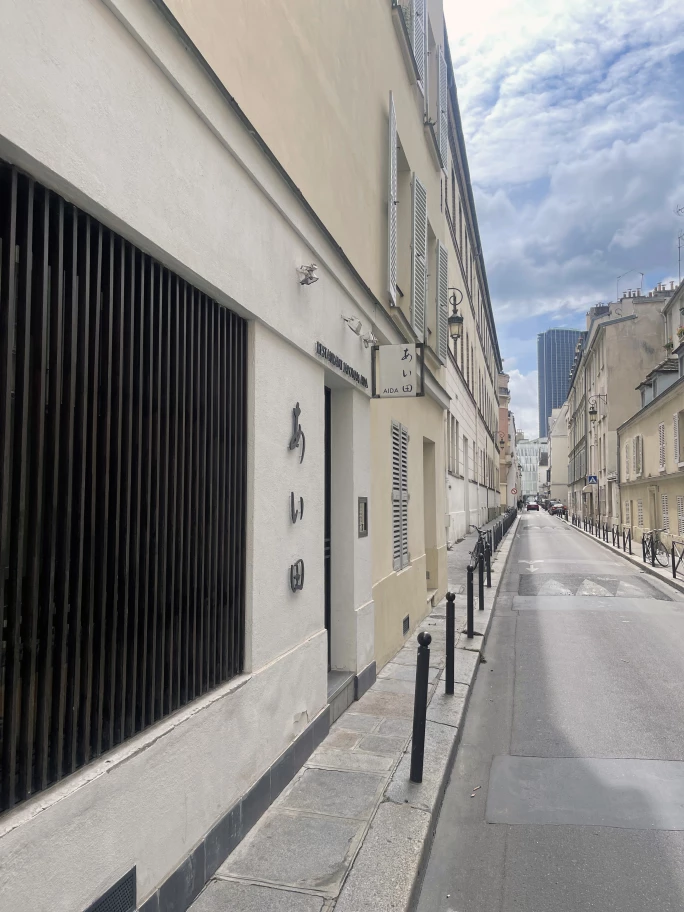
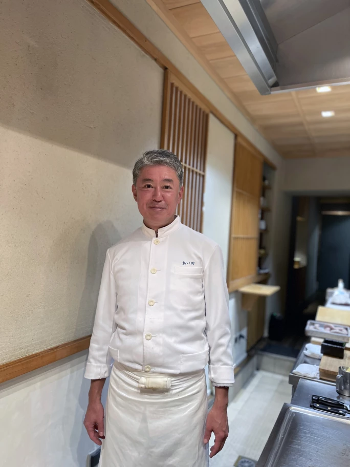
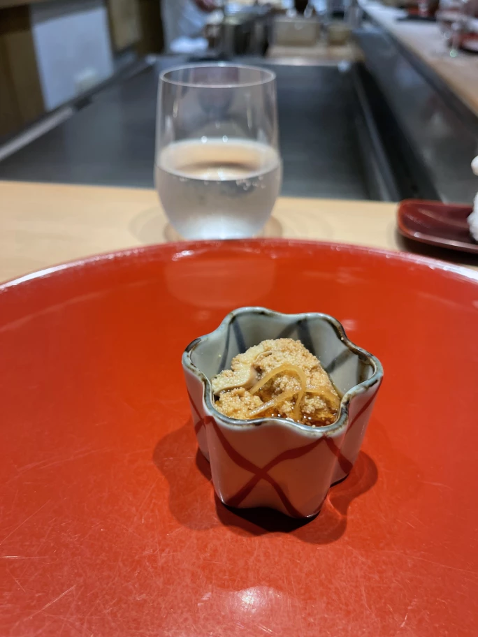
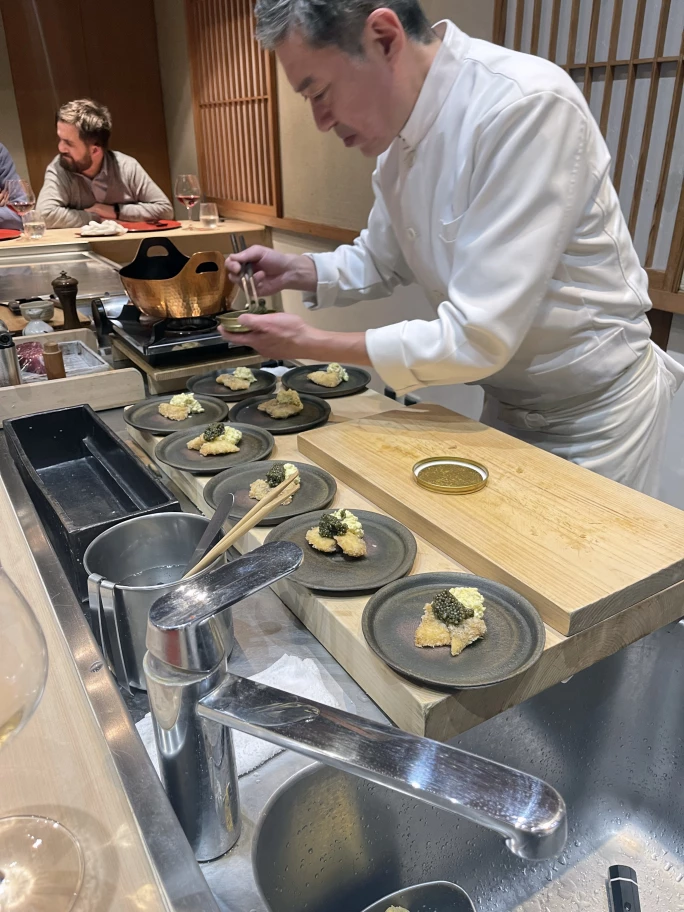

Sotheby's · 2023年11月9日
珍饈：陳泰銘環球心水餐廳精選
地址： 1 rue Pierre-Leroux, Paris, 75007, France

餐廳外觀
由相田康次（Koji Aida）主理的Aida坐落於巴黎第七區的一條小街，餐廳空間狹長，食客越過一扇低調的和式格子屏風，就能進到只有九個座位的吧台用餐區。每晚有幸落座的食客都將獲得相田主廚親自招待，享用他發辦烹調的菜式。雖然菜單一般少不了刺身，但有別於其他日式高級料理，Aida展示的是另一種烹調傳統。
相田擅長「割烹」，即切割和烹調，著重主廚和席上賓客的互動。客人近距離觀看主廚下廚，從而更欣賞主廚在準備各個菜式時所花的心思和功夫。相田每日會視乎食客的喜好調整菜單，但一般會奉上小牛肉刺身果凍或鮑魚炒羊肚菌，為美食饗宴揭開序幕。此外，還會在精緻瓷盤擺上冷薯粉配秋葵醬、白蘆筍配鱸魚天婦羅，或者為滋味餡餅灑上龍蝦肉。相田有時也會呈上各種時令菜蔬，包括家鄉新潟的特產。

主廚 Aida
相田在一個經營日式旅館和餐廳的家庭長大，20歲時初訪巴黎，對花都一見鐘情。他在羅亞爾河谷學習法語，然後歸國五年，研習烹飪。1997年，他重返巴黎，在法國和日本餐廳工作數年，嘗試將法式烹飪的複雜精緻和日式烹飪的簡單專注共冶一爐。
「就如許多初次到訪巴黎這光之城市的人們一樣，AIDA 對花都一見鐘情，不能自拔」

主廚 Aida 的菜式之一
2005年，他開設同名餐廳Aida（Aida是姓氏「相田」的羅馬拼音），以不同方式糅合日式烹調手法（如天婦羅和壽司）和法國食材（如小牛胸腺和蘆筍）。2008年，Aida成為首間在法國奪下米其林一星的日本餐廳，榮譽一直保留至今。米其林評審員盛讚Aida的食材上乘、主廚刀工精湛，菜單包羅十幾道菜式仍不失焦點。
相田主要在鐵板上燒烤和處理食材，他在訪問中表示，鐵板燒令食客對食材和烹調手法有更深入的了解，鼓勵他們在用餐期間以五感細味各樣菜式。席間，主廚或會呈上半隻烤至焦糖化、肉嫩多汁的布列塔尼龍蝦、厚切小牛胸腺、或是經輕炙調味的飽滿生牡蠣配吐司棒。自開幕以來，鐵板烤製的夏多布里安牛扒便是Aida的招牌菜，牛扒選用品質一流的利木贊牛，配上柚子醋和麻醬，再佐以金黃酥脆的蒜片。鐵板上的牛扒滋滋作響，被切成肉片的同時，旁邊也可會烤著一堆新鮮蔬菜。主菜上桌後是日式傳統的米飯配麵豉湯。甜點多數是新鮮時令水果。遇上草莓當造的季節，相田定必把草莓加入自家製冰淇淋配蛋白霜或義大利沙冰配檸檬糖漿裡，有時甚至還會在西班牙番茄冷湯中以新潟知名的草莓入饌，為整個用餐過程添上一絲家鄉的味道。

正在工作的主廚 Aida
餐廳堅持保留食材的原味，旨在呈現其簡單而地道的新鮮味美。正是這種樸實無華，吸引陳泰銘先生十年來光顧不斷，並以這些佳餚作基調，配上合適美酒，一同享用。
開業將近20年，Aida不斷作出細微的調整。如今，客人可以選擇特級品嘗菜單，而壽司亦不時在菜單亮相。酒單比以往精彩豐富，以布艮地紅白葡萄酒和小農香檳為主，價錢亦見上升。然而，相田的初心始終如一。縱然許多人都認為在Aida用餐就如一場日本之旅，但相田希望食客明白，當他們穿過餐廳門口、到達吧台就座時，眼前的用餐經驗將是一期一會，同樣的季節、時間和地點無法複製重現，當下在巴黎一瞬驚艷的感受才最為珍貴。
相片提供：Instagram/MichelinStarsChallenge